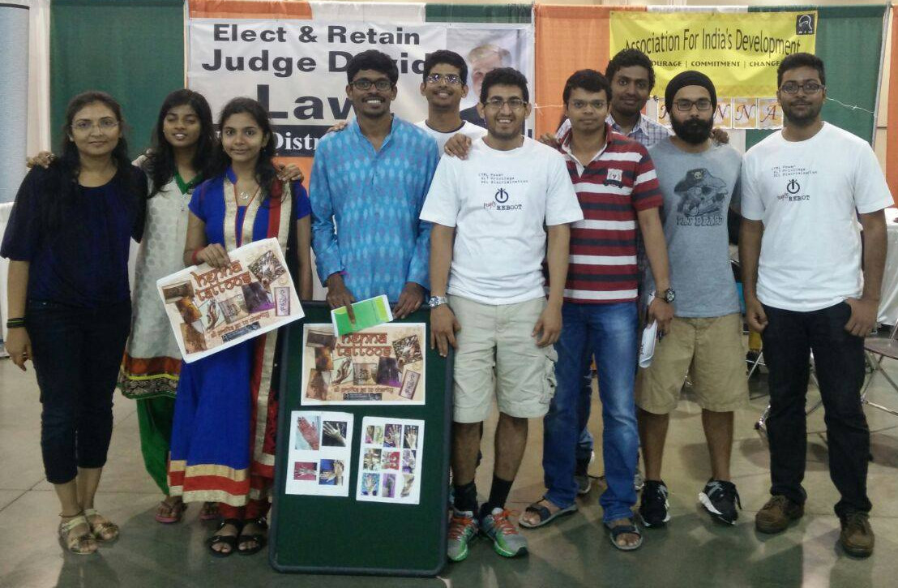

        <div id="secondary" class="widget-area col-sm-4" role="complementary">
          <aside id="text-2" class="widget widget_text">
            <h1 class="widget-title">Spread the word</h1>
            <div class="textwidget">
                <span class='st_facebook_large' displayText='Facebook'></span>
                <span class='st_googleplus_large' displayText='Google +'></span>
                <span class='st_twitter_large' displayText='Tweet'></span>
                <span class='st_whatsapp_large' displayText='WhatsApp'></span>
                <span class='st_reddit_large' displayText='Reddit'></span>
                <span class='st_email_large' displayText='Email'></span>
            </div>
          </aside>
          <aside id="text-2" class="widget widget_text"><h1
              class="widget-title">Meet our team</h1>			
            <div class="textwidget">
              <figure>
              <a href="about-us.html"> </a>
              <figcaption>Our dedicated volunteers at Ann Arbor.</figcaption>
              </figure>
            </div>
          </aside>
          <aside id="text-3" class="widget widget_text"><h1
              class="widget-title">Make an impact</h1>			<div class="textwidget"><a
                href="https://secure.aidindia.org/donate/annarbor"
                target="_blank"> </a></div>
          </aside>
          <aside id="text-4" class="widget widget_text"><h1
              class="widget-title">Attend our meetings</h1>			<div
              class="textwidget">Come attend our bi-weekly meetings at the EECS
              building in North Campus! 
              <style type="text/css">
              #map { height: 180px; }
              </style>
              <div id="map" class="map"></div>
            <script type="text/javascript">
          // create a map in the "map" div, set the view to a given place and zoom
            var map = L.map('map').setView([42.29214,-83.71432], 13);

            // add an OpenStreetMap tile layer
            L.tileLayer('http://{s}.tile.osm.org/{z}/{x}/{y}.png', {
          attribution: '&copy; <a href="http://osm.org/copyright">OpenStreetMap</a> contributors'
          }).addTo(map);

          // add a marker in the given location, attach some popup content to it and open the popup
          L.marker([42.29214,-83.71432]).addTo(map)
            .bindPopup('AID Ann Arbor meets here. <a href="http://www.openstreetmap.org/directions?engine=osrm_car&route=42.2769%2C-83.7381%3B42.2923%2C-83.7139#map=15/42.2857/-83.7251" >Directions</a>')
            .openPopup();
            </script>
            </aside>	

            <aside id="text-5" class="widget widget_text">
              <div class="fb-like-box" data-href="https://www.facebook.com/AidAnnArbor" data-colorscheme="light" data-show-faces="true" data-header="false" data-stream="true" data-show-border="false"></div>
          </aside>
          
          </div><!-- #secondary -->
